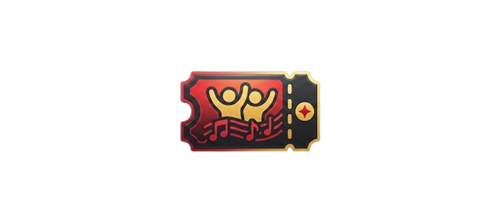
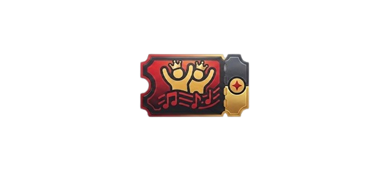

Čista rock/pop glazba!
Dobrodošli na službenu stranicu benda KRONOS!
Naša glazba je spoj sirove rock energije i melodičnih pop elemenata, stvorena da odjekuje i povezuje. Ovdje možete pronaći sve o našem zvuku, nadolazećim nastupima i putovanju koje gradimo zajedno s vama. Hvala što ste dio naše priče - ostanite s nama i uživajte u svakom tonu!
Svaki stih i svaki riff odraz su naših emocija i strasti. Naš cilj je stvoriti glazbu koja ne samo da zvuči dobro, već ostavlja trajan dojam i vodi vas kroz različita stanja - od čiste euforije do duboke introspekcije. Zajedno stvaramo nezaboravne trenutke.
Novi album "Sram"
Naš debitantski album "Sram" je konačno tu! Rezultat godina rada i beskompromisne kreativnosti, album donosi zbirku pjesama koje istražuju sve od energičnih rock himni do balada koje diraju dušu. Nadamo se da će "Sram" postati soundtrack vaših najvažnijih trenutaka.
"Ovaj album nije samo glazba, to je zapis naših vremena."
Obavijesti
U utorak 21.04.2026. službeno otvaramo novo poglavlje nastupom na Novom kampusu UNIZD-a. Dok se svijet bavi medijskim algoritmima, mi se vraćamo korijenima – izravnom kontaktu s publikom tamo gdje se rađaju najbolje ideje. Očekujte sirovu energiju i zvuk koji će odjekivati hodnicima IT odjela. Dođite podržati lokalnu scenu, popijte kavu s nama i budite dio prve stranice naše nove priče. Vidimo se!
Standarni prolaz

Standarna ulaznica za koncerte i nastupe. Omogućen pristup svim događajima.
Cijena: Besplatno
VIP prolaz

VIP ulaznica koja uključuje pristup backstageu, meet & greet s bendom i ograničeni merchandise paket Uključen glavni obrok.
Cijena: 45 €
Ekskluzivni prolaz
Najbolja ulaznica za prave fanove! Uključuje VIP prolaz, potpisani album "Sram" i osobni meet & greet s bendom. Svi obroci uključeni.
Cijena: 75 €
Informacije o nastupima
| Datum | Grad | Lokacija |
|---|---|---|
| 21.04.2026. | Zadar | Novi Kampus (IT Odjel) |
| 23.04.2026. | Zadar | Kult Caffe (Varoš) |
| 25.04.2026. | Biograd | Klub Nigdjezemska |
| 28.04.2026. | Zadar | Forum (ispred Sv. Donata) |
| 30.04.2026. | Nin | Novi Radio (Live Session) |
| 02.05.2026. | Vir | Guma Bar |